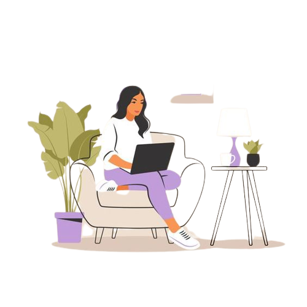

Hi, I'm Selisha
and I am a

Work Experience
Teaching Assistant
Assisted the professor in teaching & analyzing a class of 25 students by conducting interactive coding sessions in Python.Enhanced students in coding concepts and debugging techniques with an increase in grade by one letter.
Research Assistant
Worked with STEM professors to research challenges of Facial Recognization using Python and LDA for data analysis.Achieved 20% significant accurancy improvement using machine learning & statical analysis.
SDE BloomEd Intern
Led API development in BloomEd, leveraging a diverse tech stack including Java, HTML/CSS and JavaScript.Played vital role in optimizing backend processes,reducing data retrival timeby 25%